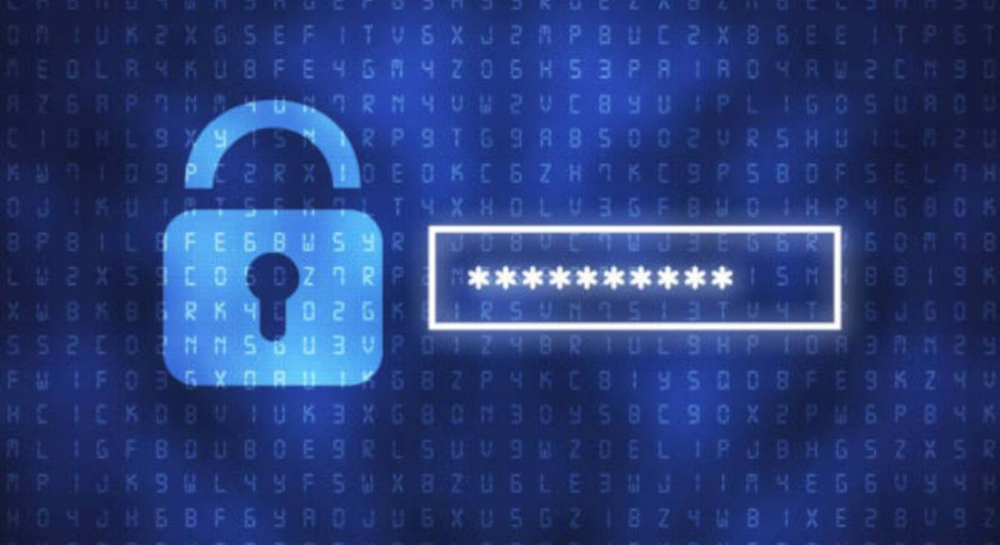
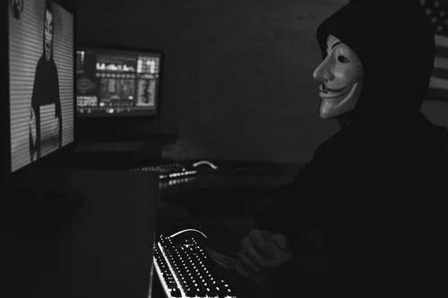
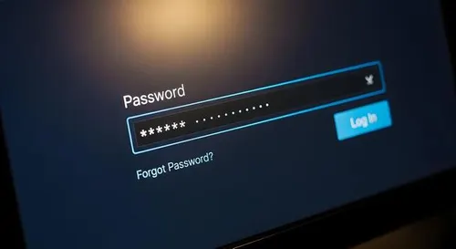
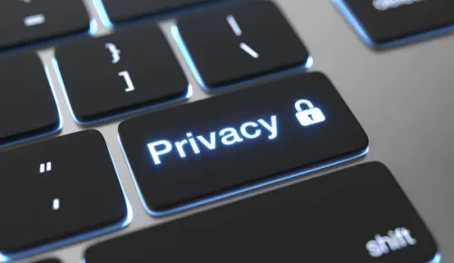
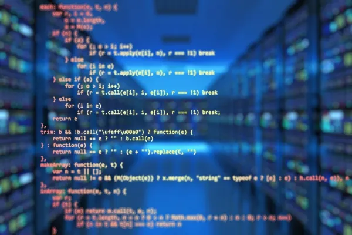

Escrito por: Nacho Gómez González
A fecha de: 4 de octubre del 2026
En un mundo cada vez más digitalizado, las contraseñas se han convertido en las llaves para abrir las puertas de nuestra identidad digital. Sin embargo, parece que este mensaje todavía no se ha extendido de lleno en nuestra sociedad, ya que la gran mayoría de usuarios sigue cometiendo errores y usando contraseñas muy débiles.
Según los datos de Verizon, alrededor del 86% de los ciberataques que se producen en el mundo a aplicaciones web utilizan credenciales robadas. Esto demuestra que el método más efectivo y popular se basa en el robo de contraseñas.


Por esa razón, en los últimos años, las plataformas, servicios y aplicaciones han introducido nuevas medidas de seguridad y han reinforced las existentes, por ejemplo, la introducción de los identificadores biométricos (huella dactilar o reconocimiento facial). Pero también la llegada de contraseñas extremadamente largas incluso de hasta 16 caracteres o más.
Existen los generadores de claves automáticos, los cuales te ofrecen códigos muy complejos y casi imposibles de recordar, pero cada vez más empresas de ciberseguridad están apostando por contraseñas de entre 14 y 16 caracteres, que no tienen por qué mezclar letras, números y símbolos.
Esto se debe a que según la psicología, la memoria de trabajo tiene una capacidad limitada de aproximadamente cuatro "bloques" a la vez. Esto significa que es más fácil recordar una contraseña de entre 14 y 16 caracteres si se compone de entre tres y cinco bloques fáciles de recordar.
A su vez, según el servicio de gestión de contraseñas Bitwarden, un hacker tardaría siglos en descifrar mediante fuerza bruta una contraseña de 16 caracteres que combinara distintos tipos de caracteres.
La mayoría de contraseñas son de 8 caracteres pero, en una época en la que surgen nuevas amenazas de piratería informática, crear contraseñas más largas es más seguro y necesario.
Las contraseñas más largas son más difíciles de descifrar, pero también más difíciles de recordar. Una de las mejores formas de solucionar esto es crear una frase de contraseña en lugar de una sola palabra, ya sea una frase corta, un dicho, la estrofa de una canción o lo que te ayude a recordarlo.
Si encima separas cada palabra con números o símbolos, tu clave será todavía más complicada de adivinar y robar. Este método es especialmente útil contra los ataques de fuerza bruta, que consiste en probar las palabras más usadas en contraseñas para robar claves.
Existen varias herramientas confiables y gratuitas para verificar la seguridad de tu contraseña.
Estas plataformas evaluan la fortaleza analizando la longitud, complejidad y patrones. Estimando el tiempo que tardaria un atacante en descifrarla mediante fuerza bruta.

Bitwarden y Password.es es una herramienta que procesan el analisis localmente de tu navegador, garantizando que la contraseña nunca se envie a un servidor.
Kaspersky y RoboForm comparan tu contraseña con bases de datos de brechas de seguridad, para verificar si ha sido comprometida.

Se sugieren usar aplicaciones como 1Password y Proton Pass para generar contrseñas únicas y aleatorias de ms de 12 caracteres.